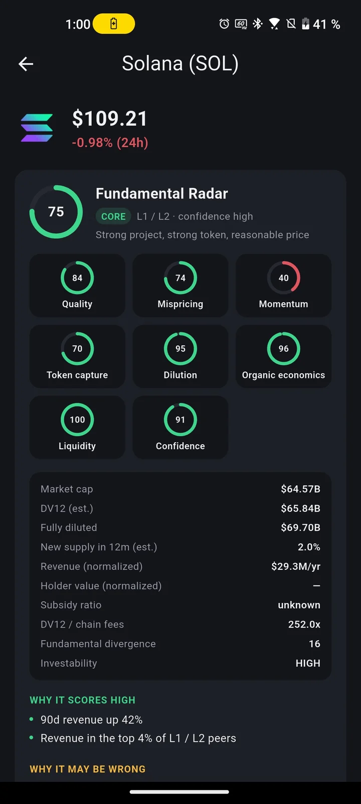
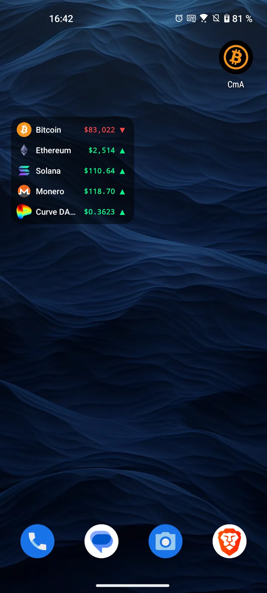
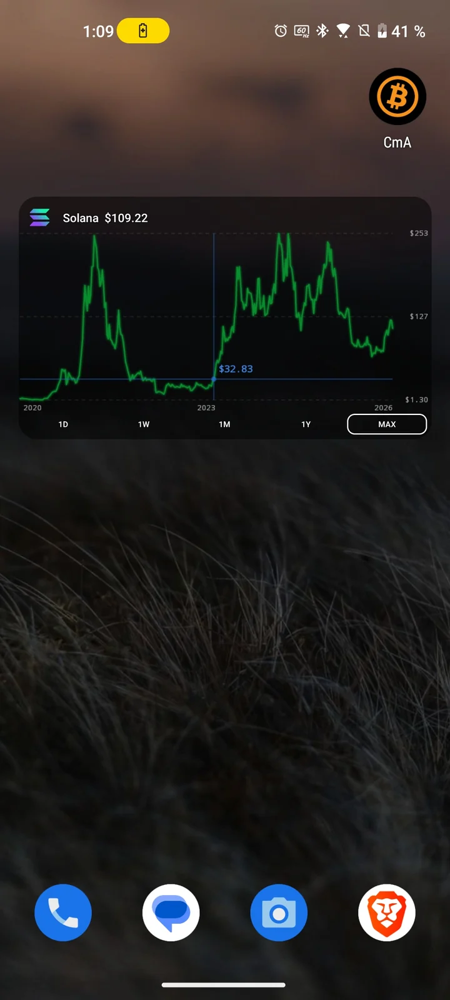

Launch price available until November 10
Until November 10 you can get SwR PRO at the current launch price. One-time payment. No subscription.
Tune into real radio receivers around the world - live, from your phone. SwR connects to hundreds of receivers across five clients - KiwiSDR/Web-888, OpenWebRX, UberSDR, FM-DX and AirSpy - and turns the ionosphere into your personal listening room.
Watch the whole band breathe in real time. A glowing frequency display, an authentic S-meter and a full waterfall view make hunting for signals feel like the real thing.
02
Different types of waterfalls & spectrums
Switch the waterfall into a rolling 3D landscape or a hypnotic 4D warp. Radio spectrum has never looked this good on a phone.
03
A worldwide receiver network
Find your receiver anywhere in the world and choose from 5 clients: KiwiSDR/Web-888, OpenWebRX, UberSDR, FM-DX and AirSpy. Watch where the sun is shining and where it's already night.
04
Shape the sound
A built-in equalizer, adjustable bandwidth, noise reduction and smart scanning. Fine-tune every station until it sounds exactly right.
05
Pixel mode
A retro monochrome skin that turns the whole receiver into a blocky pixel display. Frequency, spectrum and waterfall - reimagined as glowing dot-matrix art.
06
FM-DX
FM broadcast radio, right on your phone (87.5-108 MHz). Tuning by hand is fast and lands right on frequency, so drag the dial to hunt for stations.
07
Widgets
Two types for KiwiSDR and FM-DX. Browse the web or do anything else on your phone while the radio keeps playing - and retune any time straight from the widget.
08
Your own USB dongle
Plug in an SDR dongle and listen completely offline - no internet, no server, no limits. Just your antenna and the whole band.
09
Satellite tracking and listening
Catch transmissions from orbit right on your phone. Live satellite positions, real passes over your head - and every receiver that can hear them.
10
Plane tracking and listening
Follow air traffic anywhere in the world. Live aircraft on the map with flight, type, altitude and speed - plus the nearest airport and its tower frequency, so you can tune in and hear the pilots.
11
Free version
Enjoy listening to stations around the world completely free and without ads.
01 / 11
← Drag to turn →
Not just a receiver. A signal instrument.
Dark
Light
Panel One - one hand-crafted radio skin, two finishes. Drag the divider to switch. Every knob, switch and needle actually works.
Free or PRO.
Feature comparison between the free version of SwR and SwR PRO
Smart receiver detectionFinds the receiver's location and the band it is tuned to
Included
Included
Day / night map
Not included
Included
USB dongleYour own antenna, fully offline
Not included
Included
SatellitesLive tracking and listening
Not included
Included
PlanesLive air traffic and tower frequencies
Not included
Included
Detailed mapsPowered by OpenFreeMap
Not included
Included
Upcoming
Satellite tracking and listeningIntensive implementation is in process.
02 · SwR family · Apple Watch
SwR WatchShortwave on your wrist
A real shortwave radio on your Apple Watch. SwR Watch connects to public KiwiSDR and Web-888 receivers around the world - tune them with the Digital Crown, watch the band and listen, right on your wrist. A standalone watch app: no iPhone, no account, no sign-up.
One-time purchase
Pay once, keep it forever - no subscription.
Apple Watch onlyStandaloneNo account
AM, LSB, USB, CW and NBFM with adjustable bandwidth, volume and squelch. Audio keeps playing with your wrist down, and if a receiver drops you, SwR Watch reconnects or moves to the next best one. A separate app from SwR - Global Radio, with the same spectrum and waterfall look.
Hundreds of receivers, filed by country - nearest first.
Live spectrum and waterfall, tuned with the Digital Crown.
The whole fleet on a map, plus volume, squelch and bandwidth.
03 · New from Kruen
Free
CmACrypto Market Analysis
CmA rates 500+ coins traded on Binance by their fundamentals - a single Fundamental Radar score from 0 to 100 - and shows you exactly how that number was reached. It weighs quality (is the product really used, does it earn money, does the token benefit?) against mispricing (is the price reasonable, how much new supply is coming?), and compares each coin only with its own kind.
Missing values are never estimated - they lower Confidence instead, and a coin without the data gets no score at all. Every score is broken down on the coin's detail page with the reasons, the risks and the caveats behind it. It is an analytical tool computed from public data - not a prediction and not investment advice.
500+ coins with live prices and the Fear & Greed index, sorted by market cap, Radar score or 24h change.

The Fundamental Radar broken down, price charts up to the coin's full history and a plain-language profile of the project.


Home-screen widgets - your starred coins with live prices, or one coin's chart.
04 · New from Kruen
Free
PBHPhone Battery Health
How much of its factory capacity has your battery actually lost? PBH reads the fuel gauge chip directly - charge counter, voltage, temperature - estimates the real full capacity in mAh and follows it over time.
Every reading stays on the phone - there is no account, no server and nothing to upload.
Battery health, charge, temperature, voltage and estimated full capacity.
Live power draw next to everything that explains it.
PBH Pulse on the home screen, with 60 s, 24 h and 1 week ranges.
About
Kruen is a small studio based in the Czech Republic. We bring European quality and precision to mobile app development - traditional engineering craft combined with modern technology.
Our commitment to clean, ethical development means no ads, no hidden fees, no additional payments. And above all: we do not collect any user data. No tracking, no analytics, no data harvesting. What you do with our apps stays with you.
![Kruen]()